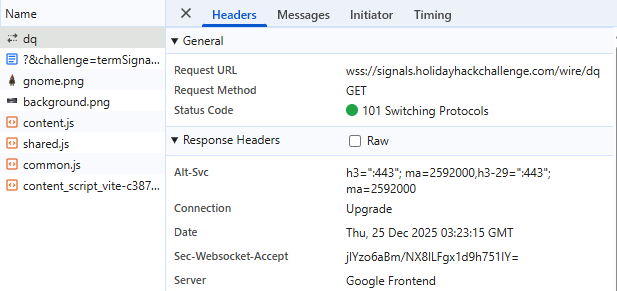
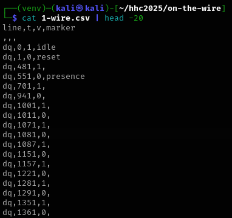
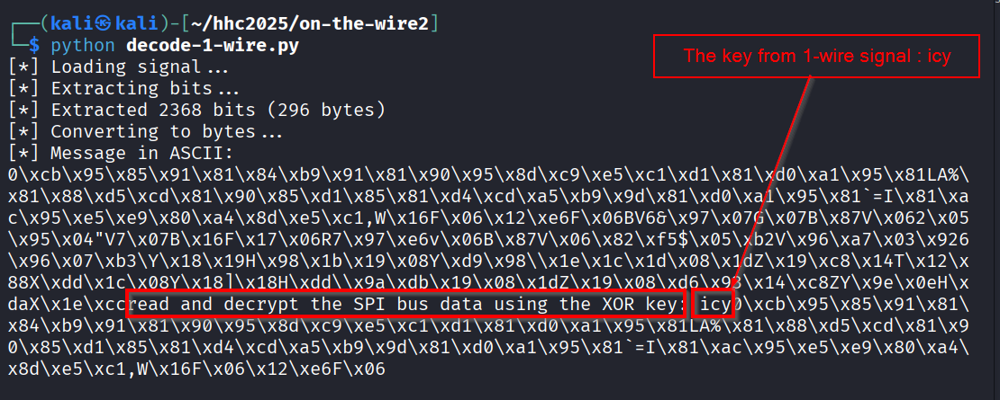
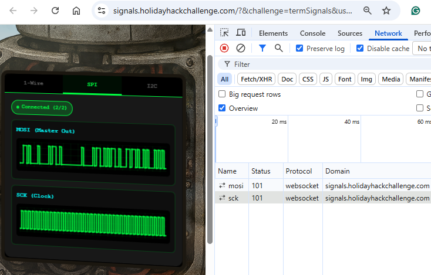
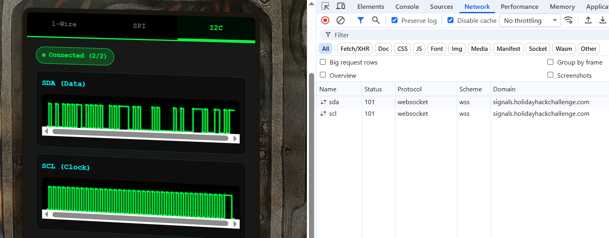
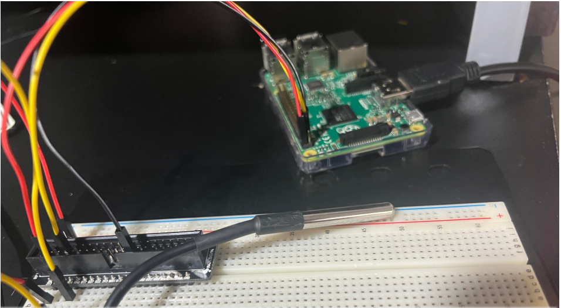

On the Wire⚓︎

Difficulty:
Direct link: On-the-wire
Area: Next to the city hall
In-game avatar: Evan Booth
Hints⚓︎
Bits and Bytes
Critical detail - Bit ordering varies by protocol:
MSB-first (Most Significant Bit first):
SPI and I2C typically send the highest bit (bit 7) first
When assembling bytes: byte = (byte << 1) | bit_value
Start with an empty byte, shift left, add the new bit
LSB-first (Least Significant Bit first):
1-Wire and UART send the lowest bit (bit 0) first
When assembling bytes: byte |= bit_value << bit_position
Build the byte from bit 0 to bit 7
I2C specific considerations:
Every 9th bit is an ACK (acknowledgment) bit - ignore these when decoding data
The first byte in each transaction is the device address (7 bits) plus a R/W bit
You may need to filter for specific device addresses
Converting bytes to text:
String.fromCharCode(byte_value) // Converts byte to ASCII character
Garbage?
If your decoded data looks like gibberish:
The data may be encrypted with XOR cipher
XOR is a simple encryption: encrypted_byte XOR key_byte = plaintext_byte
The same operation both encrypts and decrypts: plaintext XOR key = encrypted, encrypted XOR key = plaintext
How XOR cipher works:
function xorDecrypt(encrypted, key) {
let result = "";
for (let i = 0; i < encrypted.length; i++) {
const encryptedChar = encrypted.charCodeAt(i);
const keyChar = key.charCodeAt(i % key.length); // Key repeats
result += String.fromCharCode(encryptedChar ^ keyChar);
}
return result;
}
- The key is typically short and repeats for the length of the message
- You need the correct key to decrypt (look for keys in previous stage messages)
- If you see readable words mixed with garbage, you might have the wrong key or bit order
Testing your decryption:
- Encrypted data will have random-looking byte values
- Decrypted data should be readable ASCII text
- Try different keys from messages you've already decoded
On Rails
Stage-by-stage approach
- Connect to the captured wire files or endpoints for the relevant wires.
- Collect all frames for the transmission (buffer until inactivity or loop boundary).
- Identify protocol from wire names (e.g., dq → 1-Wire; mosi/sck → SPI; sda/scl → I²C).
- Decode the raw signal:
- Pulse-width protocols: locate falling→rising transitions and measure low-pulse width.
- Clocked protocols: detect clock edges and sample the data line at the specified sampling phase.
- Assemble bits into bytes taking the correct bit order (LSB vs MSB).
- Convert bytes to text (printable ASCII or hex as appropriate).
- Extract information from the decoded output — it contains the XOR key or other hints for the next stage.
- Repeat Stage 1 decoding to recover raw bytes (they will appear random).
- Apply XOR decryption using the key obtained from the previous stage.
- Inspect decrypted output for next-stage keys or target device information.
- Multiple 7-bit device addresses share the same SDA/SCL lines.
- START condition: SDA falls while SCL is high. STOP: SDA rises while SCL is high.
- First byte of a transaction = (7-bit address << 1) | R/W. Extract address with address = first_byte >> 1.
- Identify and decode every device's transactions; decrypt only the target device's payload.
- Print bytes in hex and as ASCII (if printable) — hex patterns reveal structure.
- Check printable ASCII range (0x20–0x7E) to spot valid text.
- Verify endianness: swapping LSB/MSB will quickly break readable text.
- For XOR keys, test short candidate keys and look for common English words.
- If you connect mid-broadcast, wait for the next loop or detect a reset/loop marker before decoding.
- Buffering heuristic: treat the stream complete after a short inactivity window (e.g., 500 ms) or after a full broadcast loop.
- Sort frames by timestamp per wire and collapse consecutive identical levels before decoding to align with the physical waveform.
Objective⚓︎
Request
Help Evan next to city hall hack this gnome and retrieve the temperature value reported by the I²C device at address 0x3C.
The temperature data is XOR-encrypted, so you'll need to work through each communication stage to uncover the necessary keys.
Start with the unencrypted data being transmitted over the 1-wire protocol.
Evan Booth
So here's the deal - there are some seriously bizarre signals floating around this area.
Not your typical radio chatter or WiFi noise, but something... different.
I've been trying to make sense of the patterns, but it's like trying to build a robot hand out of a coffee maker - you need the right approach.
Think you can help me decode whatever weirdness is being transmitted out there?
High-Level details⚓︎
-
1-Wire Decode – Capture DQ traffic, decode pulse widths into bits, reconstruct bytes (LSB-first), and extract the initial XOR key (icy).
-
SPI Decode – Capture MOSI/SCK traffic, sample data on clock edges, reconstruct bytes (MSB-first), XOR-decrypt using key "icy", and recover the next key ("bananza").
-
I2C Decode – Capture SDA/SCL traffic, decode I2C transactions, filter device address 0x3C, XOR-decrypt using "bananza", and extract the temperature value.
%%{init: {"themeVariables": {
"fontSize": "20px",
"nodeTextSize": "18px",
"clusterTextSize": "22px"
}}}%%
flowchart TD
subgraph Discover[1-Wire]
direction LR
A[Capture 1-Wire data DQ]
B[Decode pulse widths to bits]
C[Assemble bytes LSB first]
D[Extract ASCII key icy]
A --> B --> C --> D
end
subgraph Decode[SPI]
direction LR
E[Capture SPI data MOSI and SCK]
F[Sample MOSI on clock edges]
G[Assemble bytes MSB first]
H[XOR decrypt using key icy]
I[Extract next key bananza]
E --> F --> G --> H --> I
end
subgraph Extract[I2C]
direction LR
J[Capture I2C data SDA and SCL]
K[Decode transactions and ACK bits]
L[Filter device address 0x3C]
M[XOR decrypt using key bananza]
N[Extract temperature value]
J --> K --> L --> M --> N
end
Discover --> Decode --> ExtractSolution⚓︎
1-Wire protocol⚓︎
Fundamentals of 1-Wire protocol
What is 1-Wire?
1-Wire is a communication protocol designed to transfer data between a master device (like a microcontroller or Raspberry Pi) and one or more peripheral devices (such as temperature sensors) using just a single data wire, plus ground.
As the name suggests, all communication happens over one shared data line, which makes 1-Wire very simple from a wiring perspective. Because of this simplicity, it's commonly used for low-speed, low-power devices where minimizing wires and hardware complexity is important.
What is the Data Line in 1-Wire?
In 1-Wire, there is only one signal line, usually called DQ or DATA.
This single wire is used for:
- Sending data from the master to the device
- Sending data from the device back to the master
- Synchronization (there is no separate clock line)
The data line is normally held high using a pull-up resistor.
Both the master and the slave devices communicate by pulling the line low for specific durations of time.
So instead of using a separate clock (like I²C's SCL), 1-Wire encodes data entirely using timing.
How does communication work without a clock?
Unlike I²C, 1-Wire has no clock line.
Instead:
- The master controls all timing
- Data bits are represented by how long the line stays low
In simple terms:
- A short low pulse represents one type of bit
- A long low pulse represents another type of bit
Both the master and the device agree on these timing rules beforehand (defined by the 1-Wire protocol).
The device measures the duration of the low pulse to determine whether the bit is a 0 or a 1.
This is why, when analyzing 1-Wire captures, you often look at microsecond-level timing differences between signal transitions.
How does the master and device communicate?
- The master always initiates communication
- The master sends commands by pulling the data line low in specific timing patterns
- Devices respond by pulling the same line low during assigned time slots
Multiple devices can share the same wire because:
- Each device has a unique 64-bit ROM address
- The master can talk to a specific device or broadcast to all devices on the bus
What are practical examples where 1-Wire is used?
A very common example is the DS18B20 temperature sensor.
Typical setup:
- A Raspberry Pi or microcontroller acts as the master.
- One or more DS18B20 sensors are connected to the same single data wire
The master:
- Discovers devices by their unique IDs
- Requests temperature readings
- Receives the temperature data back over the same wire
Because only one data wire is required, 1-Wire is often used when: - Wiring needs to be simple - Devices are physically spread out - Data rates are low but reliability matters
High level tasks :⚓︎
- Collection of data
- Decoding of SPI data
- Extract the bitstream from the the collected data
- Convert the bits to bytes
- Print the ASCII to get the key
Collecting the 1-wire signals⚓︎
We see the messages over websockets

| Header |
|---|
|  |
| Messages |
 |
The data from the websocket is in JSON format.
We write a python script to collect the data from the websockets and convert to CSV.
Python script : Collect the 1-wire data [dq line] in a CSV from websocket endpoint
| collect-1-Wire-data.py | |
|---|---|
1 2 3 4 5 6 7 8 9 10 11 12 13 14 15 16 17 18 19 20 21 22 23 24 25 26 27 28 29 30 31 32 33 34 35 36 37 38 39 40 41 42 43 44 45 46 47 48 49 50 | |
Top 20 rows in the output 1-Wire-data.csv

| Column/Field Name | Description |
|---|---|
| line | the data line [dq] |
| t | timestamp of the signal transmission (in microsecond) |
| v | logical voltage level on the dq line at time t |
| marker | Annotation |
Decoding the 1-wire signal⚓︎
From the hint
Pulse-width protocols: locate falling→rising transitions and measure low-pulse width.
Understanding the falling and rising transition
A falling edge is detected when the signal transitions from HIGH (v=1) to LOW (v=0), marking the start of a LOW pulse.
A rising edge occurs when the signal transitions from LOW to HIGH (v=0 to v=1), marking the end of the LOW pulse.
Following the pulse-width protocol hint, falling→rising transitions are located.
Understanding low-pulse width
-
A pulse is when a signal:
- leaves its idle state,
- stays in another state for some time,
- and then returns.
-
In 1-Wire:
- Idle state = HIGH
- Active state = LOW
So a pulse looks like:
HIGH → LOW → HIGH
That LOW section is the pulse.
Width = In signal processing with is is how long something lasts in time.
Therefore :
low-pulse width = time spent in LOW state
and
LOW-pulse width = t(rising edge) - t(falling edge)
Based on the above concepts and understanding, we can visualize the signal transmission like below :

Based on the data collected in the CSV from the websockets endpoint, we apply a threshold of more than 6 microseconds to identify meaningful transitions.
Any timing difference greater than 6 microseconds is considered a valid signal boundary, while differences of 6 microseconds or less are treated as noise and discarded.
Python script : Decoding the 1-wire data
| decode-1-wire.py | |
|---|---|
1 2 3 4 5 6 7 8 9 10 11 12 13 14 15 16 17 18 19 20 21 22 23 24 25 26 27 28 29 30 31 32 33 34 35 36 37 38 39 40 41 42 43 44 45 46 47 48 49 50 51 52 53 54 55 56 57 58 59 60 61 62 63 64 65 66 67 68 69 70 71 72 73 74 75 76 77 78 79 80 81 82 83 84 85 86 87 88 89 90 91 92 93 94 95 96 97 98 99 100 101 102 103 104 105 106 107 108 109 110 111 112 113 114 115 116 117 118 119 120 121 122 123 124 125 126 127 128 129 130 131 | |
We run the script and get the key as "icy".

SPI protocol⚓︎
Fundamentals of SPI protocol
What is SPI?
SPI, stands for Serial Peripheral Interface, is basically a communication protocol often used to send data between microcontrollers and small peripherals like sensors, SD cards, and displays. It's known for being pretty fast and straightforward.
What is MOSI and SCK?
MOSI stands for "Master Out Slave In", which means it's the line on which the master device sends data out to a slave device.
SCK is the "Serial Clock". This is the line that the master uses to send a clock signal to keep everything in sync.
In other words, with SPI, the master is always driving a clock signal, and it's pushing data out through the MOSI line. The slave devices listen to that clock and pick up the data accordingly.
How SPI is different from 1-Wire protocol?
In a 1-wire protocol, you typically have just one data line that handles both sending and receiving bits.
1-Wire is simpler in terms of wiring, but it's not as fast or as flexible as SPI.
SPI is generally faster and more suited for situations where you need to move data quickly and have multiple devices.
What are the practical examples where SPI is used?
When you insert an SD card to a RaspberryPI, Raspberry Pi is the master controlling the communication and telling the SD card which is the slave device when to send data and when to receive it. This communication happens over SPI.
Raspberry Pi (the master) sends the actual data to the SD card over MOSI line.
Raspberry Pi also sends the clock signal on the SCK line so the SD card knows WHEN to read each bit of data that's coming in on MOSI.
In the challenge, the MOSI and SCK line data are transmitted via two websocket endpoints.

High level tasks :⚓︎
- Collection of data
- Decoding of SPI data
- Extract the bitstream from the the collected data
- Convert the bits to bytes
- XOR decrypt the bytes using the key 'icy'
- Print the ASCII to get the key
Collection of data :⚓︎
Collect MOSI and SCK data from websocket endpoints to one CSV file and order the data on timestamp.
Python script : Collecting the SPI data [MOSI and SCK lines] in one CSV from their respective websocket endpoints
1 2 3 4 5 6 7 8 9 10 11 12 13 14 15 16 17 18 19 20 21 22 23 24 25 26 27 28 29 30 31 32 33 34 35 36 37 38 39 40 41 42 43 44 45 46 47 48 49 50 51 52 53 54 55 56 57 58 59 60 61 62 63 64 65 66 67 68 69 70 71 72 73 | |
Excerpt data:
line,t,v,marker
sck,30000,0,
mosi,30000,1,data-bit
sck,30000,0,
mosi,30000,1,data-bit
sck,30000,0,
mosi,30000,1,data-bit
sck,30000,0,
sck,35000,1,sample
sck,35000,1,sample
sck,35000,1,sample
Decoding the SPI data⚓︎
- Extract the bitstream from the the collected data
The basic principle here is to collect the most recent MOSI value at the time of the SCK sample event In the below example, the bit 1 from MOSI first line below will be extracted.
1 2 3 | |

-
Convert the bits to bytes
Take bitstream and pack them into 8-bit bytes, assuming MSB-first order (the first bit we see becomes the leftmost bit of the byte).
Bits are assembled using the formula:byte = (byte << 1) | bit -
XOR decrypt the bytes using the key 'icy'
We have the key 'icy' (0x69, 0x63, 0x79) from 1-wire decoding. We use the key to XOR decrypt the bytes. -
Print the ASCII to get the key
Print the printable range 0x20 (space) to 0x7E (~). We replace anything non-printable with [.]. This reveals readable ASCII, including the key "bananza".
Python script : Decoding the SPI data
1 2 3 4 5 6 7 8 9 10 11 12 13 14 15 16 17 18 19 20 21 22 23 24 25 26 27 28 29 30 31 32 33 34 35 36 37 38 39 40 41 42 43 44 45 46 47 48 49 50 51 52 53 54 55 56 57 58 59 60 61 62 63 64 65 66 67 68 69 70 71 72 73 74 75 76 77 78 79 80 81 82 83 84 85 86 87 88 89 90 91 92 93 94 95 96 97 98 99 100 101 102 103 104 105 106 107 108 109 110 111 112 113 114 115 116 117 118 | |
Decoding the stream from SPI shows the key 'bananza'.

I2C protocol⚓︎
Fundamentals
What is I²C?
I²C, stands for Inter-Integrated Circuit, is basically a communication protocol often used to send data between microcontrollers and small peripherals like sensors, EEPROMs, and real-time clock modules. It's designed to use fewer wires and to allow multiple devices to share the same bus.
What is SDA and SCL?
SDA stands for "Serial Data Line", which means it's the line on which data is sent and received between the master and slave devices.
SCL is the "Serial Clock Line". This is the line that the master uses to send a clock signal to keep everything in sync.
In other words, with I²C, the master is always driving a clock signal on SCL, and data is exchanged on the SDA line. The slave devices listen to that clock and read or drive data on SDA accordingly.
How I²C is different from 1-Wire protocol?
In a 1-wire protocol, you typically have just one data line that handles both sending and receiving bits.
I²C uses two separate lines: one for data (SDA) and one for clock (SCL).
I²C is more structured than 1-Wire and supports features like device addressing and acknowledgments.
How I²C is different from SPI?
SPI uses separate data lines and a dedicated chip-select for each slave device.
I²C allows multiple devices to share the same two wires by using device addresses instead of chip-select lines.
SPI is generally faster, while I²C is simpler in terms of wiring and scaling to multiple devices.
What are the practical examples where I²C is used?
When you connect sensors like temperature sensors, EEPROM chips, or real-time clock modules to a Raspberry Pi, the communication often happens over I²C.
Raspberry Pi (the master) controls the communication by sending a clock signal on the SCL line.
Both the Raspberry Pi and the slave devices send and receive data over the SDA line, with data being read when the clock signal is high.
In the challenge, the SDA and SCL line data are transmitted via two separate websocket endpoints.

High level tasks⚓︎
- Collection of I2C data
- Decoding of I2C data
- Extract the bitstream from the collected data
- Convert the bits to bytes
- Handle I²C protocol-specific bits
- XOR decrypt the bytes using the key 'bananza'
- Print the ASCII output
Collection of I2C data
Collect SDA and SCL data from websocket endpoints into a single CSV file and order the data by timestamp.
This ordering reconstructs the chronological behavior of the I2C bus.
Python script : Collecting the I2C data [SDA and SCL lines] from websocket endpoints
1 2 3 4 5 6 7 8 9 10 11 12 13 14 15 16 17 18 19 20 21 22 23 24 25 26 27 28 29 30 31 32 33 34 35 36 37 38 39 40 41 42 43 44 45 46 47 48 49 50 51 52 53 54 55 56 57 58 59 60 61 62 63 64 65 66 67 68 69 70 71 72 73 74 75 76 77 78 79 80 81 | |
Decoding of I2C data
-
Extract the bitstream from the collected data
The basic principle here is to extract the SDA value when the SCL line is high. In I2C, data is valid and must be sampled while SCL is high. Each SCL high period contributes one data bit from SDA. So, in conclusion, when SCL shows "sample", take the most recent SDA value. -
Convert the bits to bytes
Take the extracted bitstream and pack it into 8-bit bytes, assuming MSB-first order, which is standard for I2C. Bits are assembled usingbyte = (byte << 1) | bit -
Handle I²C protocol-specific bits
From the hint :
Every 9th bit is an ACK (acknowledgment) bit - ignore these when decoding data
The first byte in each transaction is the device address (7 bits) plus a R/W bit
You may need to filter for specific device addresses -
XOR decrypt the bytes using the key 'bananza'
The decoded data bytes are XOR-decrypted using the repeating key bananza, which was obtained from the SPI decoding stage. -
Print the ASCII output
Print bytes in both hex and ASCII format. Printable ASCII characters (0x20–0x7E) are displayed directly, while non-printable values are replaced with .. This reveals readable ASCII content.
Python script : Decoding the I2C data
1 2 3 4 5 6 7 8 9 10 11 12 13 14 15 16 17 18 19 20 21 22 23 24 25 26 27 28 29 30 31 32 33 34 35 36 37 38 39 40 41 42 43 44 45 46 47 48 49 50 51 52 53 54 55 56 57 58 59 60 61 62 63 64 65 66 67 68 69 70 71 72 73 74 75 76 77 78 79 80 81 82 83 84 85 86 87 88 89 90 91 92 93 94 95 96 97 98 99 100 101 102 103 104 105 106 107 108 109 110 111 112 113 114 115 116 117 118 119 120 121 122 123 124 125 126 127 128 129 130 131 132 133 134 135 136 137 138 139 140 141 142 143 144 145 146 147 148 149 150 151 152 153 154 155 156 157 158 159 160 161 162 163 164 165 166 167 168 169 170 171 172 173 174 175 176 177 178 179 180 181 182 183 184 185 186 187 188 189 190 191 192 193 194 195 196 197 198 199 200 201 202 203 204 205 206 207 208 209 210 211 212 213 214 215 216 217 218 219 220 221 222 223 224 225 226 227 228 229 230 231 232 233 234 235 236 237 238 239 240 241 242 243 244 245 246 247 | |
Decoding the I2C data with the key bananza shows the temperature at address 0x3C as 32.84.

Answer
32.84

Response⚓︎
Evan Booth
Nice work! You cracked that signal encoding like a pro.
Turns out the weirdness had a method to it after all - just like most of my builds!
Learnings⚓︎
- First of all - I didn't even know about Signal processing protocols let alone solving a challenge on the same.
This got me interested in testing with actual hardware. In next few weeks I will be publishing a blog post on this.
Solving the challenge here didn't make me an expert - actually far from it.
But defnitely gave me headstart. THANK YOU!
Current status : Testing with DS18B20 Temperature Sensor for 1-wire protocol
